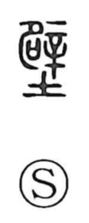

壁

Kun: kabe | On: heki
wall ・ fence ・ cliff
Explanation
A phono-semantic character: the element 辟 provides the on reading heki and originally referred to a punitive cutting of the waist, performed with 辛, depicted as a small crooked knife with a handle. Classical lexica already gloss it as 垣, a wall or fence, and its sense encompasses the wall of a house (kabe) and, by extension, a sheer rock face, as in zeppeki, a precipice that rises like a wall.